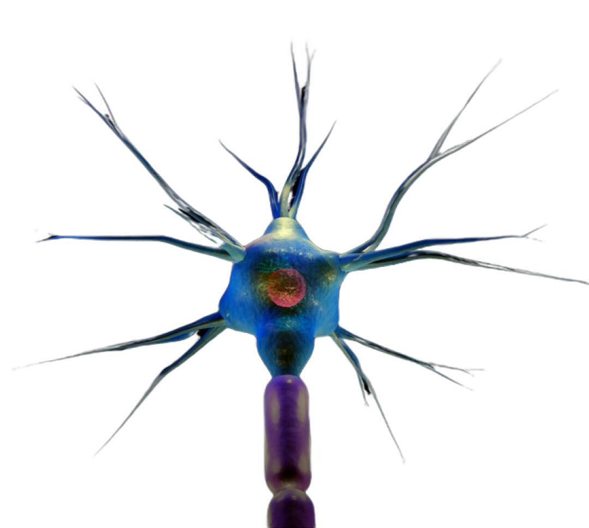

16/12/2024

16/12/2024
The perceptron, introduced by Frank Rosenblatt in 1958, was inspired by the structure and function of the biological neuron. Neurons in the human brain process information by receiving input signals through dendrites, performing computations in the cell body, and transmitting outputs via axons. Similarly, a perceptron takes input values, applies weights, sums them, and passes the result through an activation function to produce an output.
Rosenblatt's perceptron was a significant milestone in the field of artificial intelligence. It was the first algorithmically described neural network model, capable of learning and recognizing patterns from data. This simple yet profound model laid the groundwork for modern deep learning networks, demonstrating how machines could mimic human-like decision-making inspired by the brain's neuron structure.
While the original perceptron was limited to solving linear problems, its foundational principles evolved into multi-layered networks capable of solving complex, non-linear tasks. Today, the perceptron's legacy lives on in the AI systems we interact with every day.